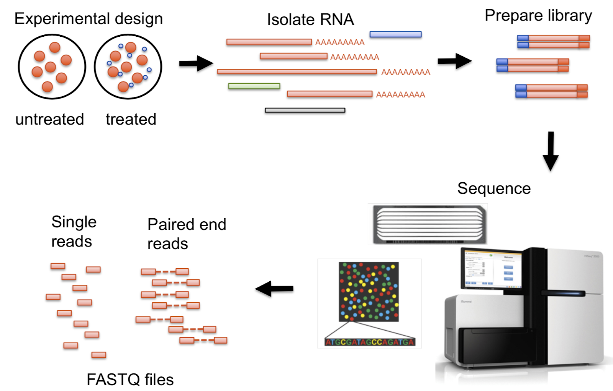

What is RNA-seq?
To understand the functional elements of the genome, it is essential to study the transcriptome, the whole set of transcripts in a cell. Investigating these elements can also add to our current knowledge on the development of diseases. A method of mapping and quantifying transcriptomes via next generation sequencing (NGS) is RNA-sequencing (RNA-seq) (Wang, Gerstein and Snyder, 2009).
In summary, the method of RNA-seq consists of generating a cDNA library from RNA. This is followed by NGS in which adapters are added to the ends of the cDNA fragments. Analysis on the cDNA library is conducted with NGS. As a result, short sequences corresponding to either ends of the fragment are produced. Depending on the method, many single reads or paired-end reads are produced. These are aligned to a genome of a chosen reference prior being assembled to generate an RNA sequence map. With the help of RNA-seq, we can determine the expression levels of genes in a cell and when they are activated. As a result, we can study the changes that occur in the gene expression of a cell that correspond to the development of a disease. The utilisation of RNA-seq is advantageous as it is not limited to genomic sequences that have previously been determined, RNA-seq is also more quantifiable relative to other techniques (Kukurba and Montgomery, 2015).

https://sydney-informatics-hub.github.io/training-RNAseq-slides/01_IntroductionToRNASeq/01_IntroductionToRNASeq.html#1
What are the advantages and disadvantages of different techniques?
There are also many different types of RNA-seq which are used under different circumstances. For example, if the aim is to study gene expression across a population of cells in different conditions, bulk RNA-seq would be relevant. There is also single cell RNA-seq (scRNA-seq) which studies a single cell and single nuclei RNA-seq (snRNA-seq) which isolates just the nucleus. scRNA-seq observes the gene expression of an individual cell in a sample to evaluate differences in cell types and states. (Tasic, 2018) This helps identify cell populations and differential expression. However, scRNA-seq includes cytoplasmic and nuclear transcripts, while snRNA-seq mostly measures nuclear transcripts. This makes snRNA-seq more suited to evaluating the gene expression in cells of preserved tissues and difficult to isolate cells. Also, this means that snRNA-seq does not include RNA from mitochondria, chloroplasts, gene isoforms, etc (Bio, 2021). All types of RNA-seq are useful depending on the aim of the study. To this day, the technology of RNA-seq is improving and is a revolutionary tool for transcriptomics.